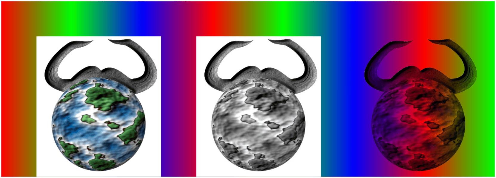

The TikZ and PGF Packages
Manual for version 3.1.10
The Basic Layer
110 Declaring and Using Images¶
This section describes the commands for creating images.
110.1 Overview¶
To be quite frank, LaTeX’s \includegraphics is designed better than pgf’s image mechanism. For this reason, I recommend that you use the standard image inclusion mechanism of your format. Thus, LaTeX users are encouraged to use \includegraphics to include images.
However, there are reasons why you might need to use the image inclusion facilities of pgf:
-
• There is no standard image inclusion mechanism in your format. For example, plain TeX does not have one, so pgf’s inclusion mechanism is “better than nothing”.
However, this applies only to the pdftex backend. For all other backends, pgf currently maps its commands back to the graphicx package. Thus, in plain TeX, this does not really help. It might be a good idea to fix this in the future such that pgf becomes independent of LaTeX, thereby providing a uniform image abstraction for all formats.
-
• You wish to use masking. This is a feature that is only supported by pgf, though I hope that someone will implement this also for the graphics package in LaTeX in the future.
Whatever your choice, you can still use the usual image inclusion facilities of the graphics package.
The general approach taken by pgf to including an image is the following: First, \pgfdeclareimage declares the image. This must be done prior to the first use of the image. Once you have declared an image, you can insert it into the text using \pgfuseimage. The advantage of this two-phase approach is that, at least for pdf, the image data will only be included once in the file. This can drastically reduce the file size if you use an image repeatedly, for example in an overlay. However, there is also a command called \pgfimage that declares and then immediately uses the image.
To speedup the compilation, you may wish to use the following class option:
-
\usepackage[draft]{pgf}
In draft mode boxes showing the image name replace the images. It is checked whether the image files exist, but they are not read. If either height or width is not given, 1cm is used instead.
110.2 Declaring an Image¶
-
\pgfdeclareimage[⟨options⟩]{⟨image name⟩}{⟨filename⟩} ¶
-
• height=⟨dimension⟩ sets the height of the image. If the width is not specified simultaneously, the aspect ratio of the image is kept.
-
• width=⟨dimension⟩ sets the width of the image. If the height is not specified simultaneously, the aspect ratio of the image is kept.
-
• page=⟨page number⟩ selects a given page number from a multipage document. Specifying this option will have the following effect: first, pgf tries to find a file named
⟨filename⟩.page⟨page number⟩.⟨extension⟩
If such a file is found, it will be used instead of the originally specified filename. If not, pgf inserts the image stored in ⟨filename⟩.⟨extension⟩ and if a recent version of pdflatex is used, only the selected page is inserted. For older versions of pdflatex and for dvips the complete document is inserted and a warning is printed.
-
• interpolate=⟨true or false⟩ selects whether the image should be “smoothed” when zoomed. False by default.
-
• mask=⟨mask name⟩ selects a transparency mask. The mask must previously be declared using \pgfdeclaremask (see below). This option only has an effect for pdf. Not all viewers support masking.
Declares an image, but does not paint anything. To draw the image, use \pgfuseimage{⟨image name⟩}. The ⟨filename⟩ may not have an extension. For pdf, the extensions .pdf, .jpg, and .png will automatically tried. For PostScript, the extensions .eps, .epsi, and .ps will be tried.
The following options are possible:
\pgfdeclareimage[interpolate=true,height=1cm]{image1}{images/brave-gnu-world-logo}
\pgfdeclareimage[interpolate=true,width=1cm,height=1cm]{image2}{images/brave-gnu-world-logo}
\pgfdeclareimage[interpolate=true,height=1cm]{image3}{images/brave-gnu-world-logo}
-
\pgfaliasimage{⟨new image name⟩}{⟨existing image name⟩} ¶
The {⟨existing image name⟩} is “cloned” and the {⟨new image name⟩} can now be used whenever the original image is used. This command is useful for creating aliases for alternate extensions and for accessing the last image inserted using \pgfimage.
Example: \pgfaliasimage{image.!30!white}{image.!25!white}
110.3 Using an Image¶
-
\pgfuseimage{⟨image name⟩} ¶
Inserts a previously declared image into the normal text. If you wish to use it in a {pgfpicture} environment, you must put a \pgftext around it.
If the macro \pgfalternateextension expands to some nonempty ⟨alternate extension⟩, pgf will first try to use the image named ⟨image name⟩.⟨alternate extension⟩. If this image is not defined, pgf will next check whether ⟨alternate extension⟩ contains a ! character. If so, everything up to this exclamation mark and including it is deleted from ⟨alternate extension⟩ and the pgf again tries to use the image ⟨image name⟩.⟨alternate extension⟩. This is repeated until ⟨alternate extension⟩ no longer contains a !. Then the original image is used.
The xxcolor package sets the alternate extension to the current color mixin.
\pgfdeclareimage[interpolate=true,width=1cm,height=1cm]
{image1}{images/brave-gnu-world-logo}
\pgfdeclareimage[interpolate=true,width=1cm]{image2}{images/brave-gnu-world-logo}
\pgfdeclareimage[interpolate=true,height=1cm]{image3}{images/brave-gnu-world-logo}
\begin{pgfpicture}
\pgftext[at=\pgfpoint{1cm}{5cm},left,base]{\pgfuseimage{image1}}
\pgftext[at=\pgfpoint{1cm}{3cm},left,base]{\pgfuseimage{image2}}
\pgftext[at=\pgfpoint{1cm}{1cm},left,base]{\pgfuseimage{image3}}
\pgfpathrectangle{\pgfpoint{1cm}{5cm}}{\pgfpoint{1cm}{1cm}}
\pgfpathrectangle{\pgfpoint{1cm}{3cm}}{\pgfpoint{1cm}{1cm}}
\pgfpathrectangle{\pgfpoint{1cm}{1cm}}{\pgfpoint{1cm}{1cm}}
\pgfusepath{stroke}
\end{pgfpicture}
The following example demonstrates the effect of using \pgfuseimage inside a colormixin environment.
\usepackage {xxcolor}
\pgfdeclareimage[interpolate=true,width=1cm,height=1cm]
{image1.!25!white}{images/brave-gnu-world-logo.25}
\pgfdeclareimage[interpolate=true,width=1cm]
{image2.25!white}{images/brave-gnu-world-logo.25}
\pgfdeclareimage[interpolate=true,height=1cm]
{image3.white}{images/brave-gnu-world-logo.25}
\begin{colormixin}{25!white}
\begin{pgfpicture}
\pgftext[at=\pgfpoint{1cm}{5cm},left,base]{\pgfuseimage{image1}}
\pgftext[at=\pgfpoint{1cm}{3cm},left,base]{\pgfuseimage{image2}}
\pgftext[at=\pgfpoint{1cm}{1cm},left,base]{\pgfuseimage{image3}}
\pgfpathrectangle{\pgfpoint{1cm}{5cm}}{\pgfpoint{1cm}{1cm}}
\pgfpathrectangle{\pgfpoint{1cm}{3cm}}{\pgfpoint{1cm}{1cm}}
\pgfpathrectangle{\pgfpoint{1cm}{1cm}}{\pgfpoint{1cm}{1cm}}
\pgfusepath{stroke}
\end{pgfpicture}
\end{colormixin}
-
\pgfalternateextension ¶
You should redefine this command to install a different alternate extension.
Example: \def\pgfalternateextension{!25!white}
-
\pgfimage[⟨options⟩]{⟨filename⟩} ¶
Declares the image under the name pgflastimage and immediately uses it. You can “save” the image for later usage by invoking \pgfaliasimage on pgflastimage.
\usepackage {xxcolor}
\begin{colormixin}{25!white}
\begin{pgfpicture}
\pgftext[at=\pgfpoint{1cm}{5cm},left,base]
{\pgfimage[interpolate=true,width=1cm,height=1cm]{images/brave-gnu-world-logo}}
\pgftext[at=\pgfpoint{1cm}{3cm},left,base]
{\pgfimage[interpolate=true,width=1cm]{images/brave-gnu-world-logo}}
\pgftext[at=\pgfpoint{1cm}{1cm},left,base]
{\pgfimage[interpolate=true,height=1cm]{images/brave-gnu-world-logo}}
\pgfpathrectangle{\pgfpoint{1cm}{5cm}}{\pgfpoint{1cm}{1cm}}
\pgfpathrectangle{\pgfpoint{1cm}{3cm}}{\pgfpoint{1cm}{1cm}}
\pgfpathrectangle{\pgfpoint{1cm}{1cm}}{\pgfpoint{1cm}{1cm}}
\pgfusepath{stroke}
\end{pgfpicture}
\end{colormixin}
110.4 Masking an Image¶
-
\pgfdeclaremask[⟨options⟩]{⟨mask name⟩}{⟨filename⟩} ¶
-
• matte={⟨color components⟩} sets the so-called matte of the actual image (strangely, this has to be specified together with the mask, not with the image itself). The matte is the color that has been used to preblend the image. For example, if the image has been preblended with a red background, then ⟨color components⟩ should be set to {1 0 0}. The default is {1 1 1}, which is white in the rgb model.
The matte is specified in terms of the parent’s image color space. Thus, if the parent is a grayscale image, the matte has to be set to {1}.
Declares a transparency mask named ⟨mask name⟩ (called a soft mask in the pdf specification). This mask is read from the file ⟨filename⟩. This file should contain a grayscale image that is as large as the actual image. A white pixel in the mask will correspond to “transparent”, a black pixel to “solid”, and gray values correspond to intermediate values. The mask must have a single “color channel”. This means that the mask must be a “real” grayscale image, not an rgb-image in which all rgb-triples happen to have the same components.
You can only mask images that are in a “pixel format”. For drivers with pdf output, these are .jpg and .png image files; you cannot mask .pdf images in this way. Pixel images for the dvips+ps2pdf workflow must be provided as .eps or .ps files. Also, again, the mask file and the image file must have the same size.
The following options may be given:
Example:

%% Draw a large colorful background
\pgfdeclarehorizontalshading{colorful}{5cm}{color(0cm)=(red);
color(2cm)=(green); color(4cm)=(blue); color(6cm)=(red);
color(8cm)=(green); color(10cm)=(blue); color(12cm)=(red);
color(14cm)=(green)}
\hbox{\pgfuseshading{colorful}\hskip-14cm\hskip1cm
\pgfimage[height=4cm]{images/brave-gnu-world-logo}\hskip1cm
\pgfimage[height=4cm]{images/brave-gnu-world-logo-mask}\hskip1cm
\pgfdeclaremask{mymask}{images/brave-gnu-world-logo-mask}
\pgfimage[mask=mymask,height=4cm,interpolate=true]{images/brave-gnu-world-logo}}